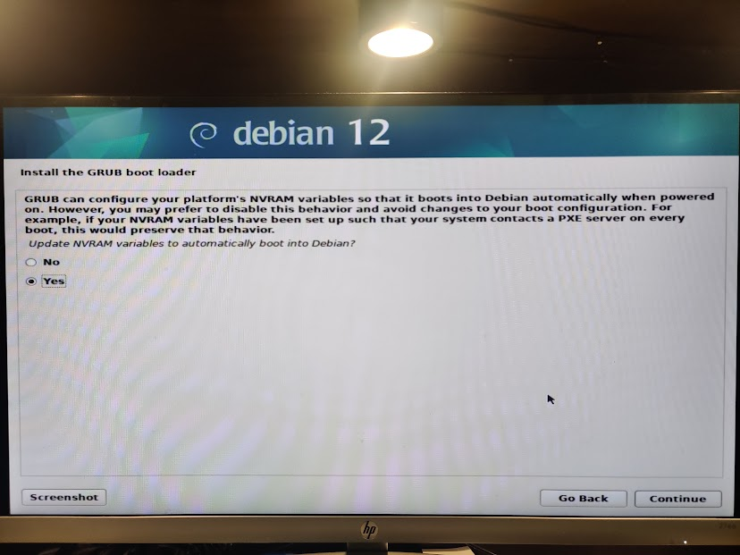

Building my server part 3 — The switch to debian
Why the switch?
Recently, I have been very busy working on scripts and ansible playbooks for the Collegiate Cyber Defense Competition.
In order to test those playbooks, I have been using Vagrantfiles, as an excerp, something like this:
# -*- mode: ruby -*-
# vi: set ft=ruby :
Vagrant.configure("2") do |config|
config.vm.synced_folder ".", "/vagrant", disabled: true
config.vm.provision "shell", path: "scripts/packages.sh"
config.vm.define "318" do |vmconfig|
vmconfig.vm.provision "ansible" do |ansible|
ansible.playbook = "ansible/inventory.yml"
end
vmconfig.vm.box = "generic/alpine318"
vmconfig.vm.provider "libvirt" do |libvirt|
libvirt.driver = "kvm"
libvirt.memory = 1024
libvirt.cpus = 2
libvirt.video_type = "virtio"
end
vmconfig.vm.provider "virtualbox" do |virtualbox,override|
virtualbox.memory = 1024
virtualbox.cpus = 1
end
end
endThis is from the ccdc-2023 github repo. With a single command, vagrant up, I can create virtual machines, and then provision them with ansible playbooks.
Even more impressive, I can use the generated ansible inventory manually, as noted in the ansible documentation. This creates an environment closer to how I would actually use the vagrant ansible playbooks.
Vagrants snapshots let me easily freeze and revert machines to previous features.
I used vagrant, in combination with windows vagrant machines to easily test things for the ccdc environment guide.
However, when attempting to up vagrant on my Rocky Linux machine, I got an error: Spice is not supported.
Apparently, Red Hat Enterprise Linux deprecated spice, and now any rebuilds of it, no longer have spice as well.
https://forums.rockylinux.org/t/spice-support-was-dropped-in-rhel-9/6753
https://access.redhat.com/articles/442543 (requires subscription, but the important content is in the beginning).
Except, my Arch Linux machines can still run spice virtual machines just fine… so when I want to run a Vagrant box(s) on my server, like the Windows boxes which require much more memory, I can either write around this missing feature, using the much less performant VNC… or I can switch.
The main reason why I picked Rocky, was the 4 year support of an operating system supported by Kolla-ansible. This is no longer the only case.
As of the current supported Kolla-Ansible, it now supports Debian 12, which will be supported for all 4 years of my bachelors. Support Matrix.
With this, I decided to switch to debian… but I encountered some challenges.
Installing Debian
When I installed Debian in UEFI mode, it wouldn’t boot. But Rocky Linux booted just fine? Why?
I tested a legacy install, and it booted just fine. Did a little more research, asked for help from a friend, and found this:
According to the debian wiki some UEFI motherboards do not implement the spec properly (even after a BIOS update, it seems). Described in that article, is how to get around this quirk, and why they don’t do that by default.
All OS installers installing things to this removable media path will conflict with any other such installers, which is bad and wrong. That’s why in Debian we don’t do this by default.
But, it was only after selecting the “expert install” in the installer, that I was eventually presented with this menu:

And by forcing a grub install, I finally got it to boot in UEFI mode.
In my opinion, the debian installer should do this as a default if it detects that it is going to be the sole OS. I would rather have a booting install than a standards compliant one.
Although, it was suprising and disheartening to learn that what I considered to be an enterprise server doesn’t implement a standard such as this properly.
Configuring
I don’t want to do openstack just yet. After getting experience with keycloak, active directory, and ldap, I’ve decided that this server can be the host to a variety of services, all using ldap or SSO to sign on. I want a remote development environment, not just for me, but also for my team members.
The other thing I want is for the server to be configured as code. Past the initial setup (podman, libvirt, nix), I want everything to be configured via ansible.
Goals:
Overall, system design goals
- Configuration as code
- Rootless containers when possible
- No docker on bare metal — this interferes with the eventual open stack install
- Security
- Https should be terminated on my home server, not on my vps
Service/Specific goals for the short(er) term:
- Podman
- Nvidia runtime, for kasm hardware acceleration, and AI
- LDAP
- Do I want openldap or lldap?
- keycloak
- Connected to ldap, of course
- everything should be SSO when possible
- Kasmweb
- Run this in a privileged podman container rather than docker is my only real option
- Create kasm containers for development environment for my teams
- Nix in kasm docker containers
- Hardware acceleration via Nvidia?
- Mounting /dev/kvm inside for libvirt inside? Or remote libvirt
Later, I want:
- Forgejo — a source forge
- Move my blog to this server, from github pages
- Continue to use some form of CI/CD for it.
Reverse Proxies and HTTPS
To ensure maximum security, I need to terminate HTTPS on the home server, which is completely under my control, unlike the VPS I’m renting from Contabo.
Currently, I have a simply setup using nginx proxy manager, where it reverse proxies any sites I want to create by terminating TLS/SSL on the VPS.
I don’t really feel like going back to pure nginx, it was very painful to configure, which is why I switched to the easier frontend, nginx proxy manager (npm).
I attempted to set up a stream, but I was simply redirected to the “Nginx Proxy Manager” page instead.
I bought a domain: <moonpiedumpl.ing>. It looks very clean. I will use subdomains for each service, something like <keycloak.moonpiedumpl.ing> will be the keycloak service, and so on.
I want a declarative reverse proxy, that can reverse proxy existing https servers, without issues. Caddy can probably do this.
I think the crucial thing is that is that Caddy some of the reverse proxy headers by default. It’s documented here: https://caddyserver.com/docs/caddyfile/directives/reverse_proxy#defaults
So the second Caddy proxy, located on the internal server, would have the option “trusted proxies”, set to the ip address that the internal server sees coming from the VPS. This will cause it to not edit the headers, allowing the internal server to see the real ip address of the machines connecting to the services.
Caddy can also configure https automatically: https://caddyserver.com/docs/caddyfile/options#email
As for TLS passthrough on the external Caddy service, I found some relevant content:
https://caddy.community/t/reverse-proxy-chaining-vps-local-server-service-trusted-proxies/18105
Alright. This isn’t working. Double reverse proxies are a pain to configure, plus they seem to be lacking support for some things.
So… alternatives?
It seems to forward traffic as it, which is good, because I don’t want it to get in the way of caddy.
I also need to test iptables as a reverse proxy. I don’t want to test this, as it requires that I tear down some of my declarative configuration to temporarily test this in an imperative manner.
Alternatively, I am looking at iptables.
There are several relevant stackoverflow answers: this one and this one.
I did a little bit of experimenting with iptables, but it looks to be more effort than it is worth to configure, for something that might not even work.i
I started looking through this: https://github.com/anderspitman/awesome-tunneling
Projects like frp appeal to me and look like they do what I want to.
Out of them, rathole appeals to me the most. The benchmarks advertise high performance, and it has an official docker container. This would make it easy to deploy.
I don’t like the existing rathole docker images. The official one is older than the code is, and other docker container uses a bash script reading enviornment variables to configure itself.
I’ve decided to compile rathole myself. I want a static binary I can copy over to an empty docker container, and then docker can handle the service managemnt.
I want to compile rathole myself. Originally I was going to compile rathole statically on an alpine container, but I kept encountering issues, so I decided to use the debian container (that is one of the solutions I saw on the answer sites)
FROM rust:latest as stage0 # Debian bookworm
ENV RUSTFLAGS="-C target-feature=+crt-static"
RUN apt install musl-tools
RUN git clone https://github.com/rapiz1/rathole
RUN rustup target install x86_64-unknown-linux-musl
RUN cd rathole && cargo build --release --target x86_64-unknown-linux-musl
FROM scratch
COPY --from=stage0 /rathole/target/x86_64-unknown-linux-musl/release/rathole /bin/rathole
CMD ["/bin/rathole"]It uses a multi stage build to copy the statically compiled binary to the final container.
Ansibilizing the server
Podman
Rootless
I was actually doing really good, but I encountered a roadblock:
TASK [Create caddy directory] ************************************************************************************************************
fatal: [moonstack]: FAILED! => {"msg": "Failed to set permissions on the temporary files Ansible needs to create when becoming an unprivileged user (rc: 1, err: chmod: invalid mode: ‘A+user:podmaner:rx:allow’\nTry 'chmod --help' for more information.\n}). For information on working around this, see https://docs.ansible.com/ansible-core/2.16/playbook_guide/playbooks_privilege_escalation.html#risks-of-becoming-an-unprivileged-user"}The relevant ansible code uses become to run as the podmaner user, and then runs the ansible podman container module.
It links to some docs here: https://docs.ansible.com/ansible-core/2.16/playbook_guide/playbooks_privilege_escalation.html#risks-of-becoming-an-unprivileged-user
This was fixed after I installed the acl package.
Pods
Podman has “pods”. These are somewhat similar to docker networks, which I prefer.
With docker networks, the “network” has a dns, and containers can find eachother by the container name. I enjoyed this with nginx proxy manager, because then I could just forward “containername:port” and it would be easy.
Podman pods work a bit differently. Every pod can contain multiple containers, but they share a network interface. I tested this with two alpine containers, even if I bind a port to localhost, then the other container can still access it.
I am using ansible to create pods:
Ansible facts HOME =/= $HOME
I was having ansible run some things as another user, and using something like this to get the home directory of the user it was running as:
- name: Do podmaner container
become: true
become_user: "{{ rathole_user }}"
block:
- name: Create rathole config
ansible.builtin.file:
path: "{{ lookup('ansible.builtin.env', 'HOME') }}/rathole/config"
state: directory
mode: '0775'But this errors. Despite rathole_user being podmaner, the error is something like:
TASK [rathole : Create rathole config] *******************************************************************************************
fatal: [moonstack]: FAILED! => {"changed": false, "msg": "There was an issue creating /home/moonpie/rathole as requested: [Errno 13] Permission denied: b'/home/moonpie/rathole'", "path": "/home/moonpie/rathole/config"}This might be because, when executing one off commands, sudo does not keep environment variables
moonpie@thoth:~$ sudo -iu podmaner echo $HOME
/home/moonpieInterestingly enough, using the $HOME environment variable works though.
- name: Do podmaner container
become: true
become_user: "{{ rathole_user }}"
block:
- name: Get home
ansible.builtin.command: "echo $HOME"
register: homepath
- name: Print current home
ansible.builtin.debug:
msg: "{{ homepath.stdout }}"TASK [rathole : Print current home] **********************************************************************************************
ok: [moonstack] => {
"msg": "/home/podmaner"
}Oh, I figured it out. After a quick google, this is because this lookup runs on the control node, rather than the server being managed.
From the ansible docs: “query the environment variables available on the controller”
I also decided to try ansible_facts['env']['HOME'], but that still outpus /home/moonpie. It seems that facts are gathered using hte user ansible initially logs in as.
ansible_env['HOME'] doesn’t work either, probably for the same reason.
This was a fun little tangent, I think I am going to return to using $HOME and other environment variables. Since things like podman volumes can’t simply be fed environment variables, I have to echo $HOME to get it first, and then save it to stdout. It feels like there should be a cleaner way to do this, but this does work.
Ansible vault
If I am going to use rathole, then I need to deploy a config file with a client and server secrets. Although an extra step of complexity, thankfully, ansible makes handling secrets easy, with ansible vault.
Main docs here: https://docs.ansible.com/ansible/latest/vault_guide/index.html
Docs on handling vault passwords
I only need a few variables encrypted, so maybe:
Docs on encrypting individual variables
Or I could encrypt a file with the variables I want and add them? :
Service deployment
All of this will be ansibilized, ideally.
Authentik
The listen settings are here: https://goauthentik.io/docs/installation/configuration/#listen-settings
So the podman pod which runs all of authentik will have those ports forwarded.
- name: Create relevant podman pod
containers.podman.podman_pod:
name: authentik_pod
state: present
ports:
- "9000:9000"
- "9443:9443"
- "3389:3389"
- "6636:3389"Presearch for future pieces
Openstack Notes
I will probably get to this later on.
Rather than trying to do an openstack native implemenation of a public ipv6 addresses for virtual machines on a private ip address, I can simply have my router set up a “private” ipv6 subnet, and then VPN (or an L2TP, which does not come with encryption). Then, I can do a 1 to 1 NAT, or something of the sort, but without any address translation. By putting VM’s on this subnet, I can give them public ipv6 addresses. This is simpler, and compatible with more than just openstack.
Something like this is definitely possible.
https://superuser.com/questions/887745/routing-a-particular-subnet-into-a-vpn-tunnel
https://superuser.com/questions/1162231/route-public-subnet-over-vpn